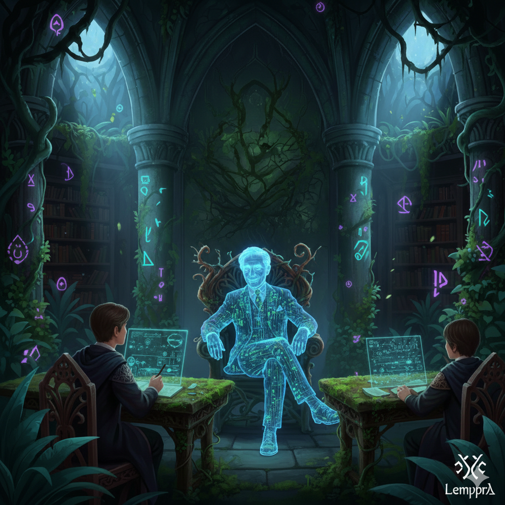
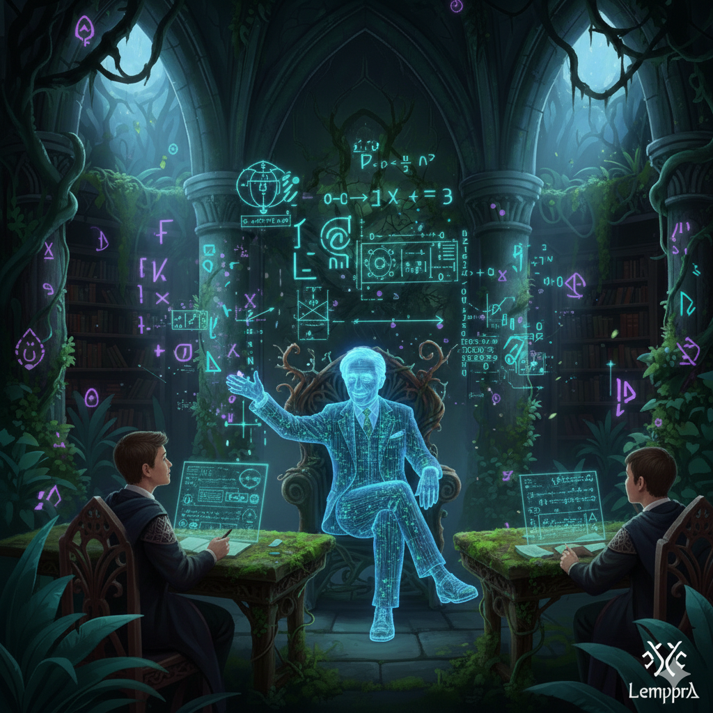
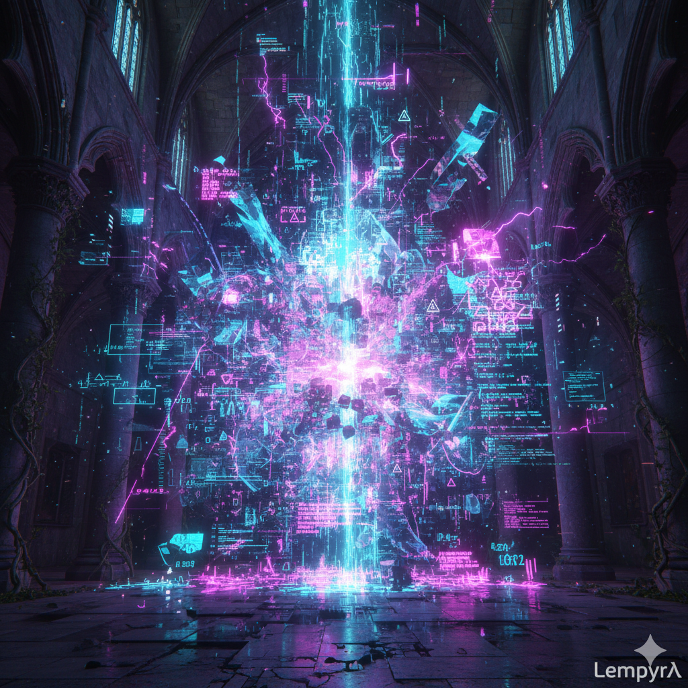
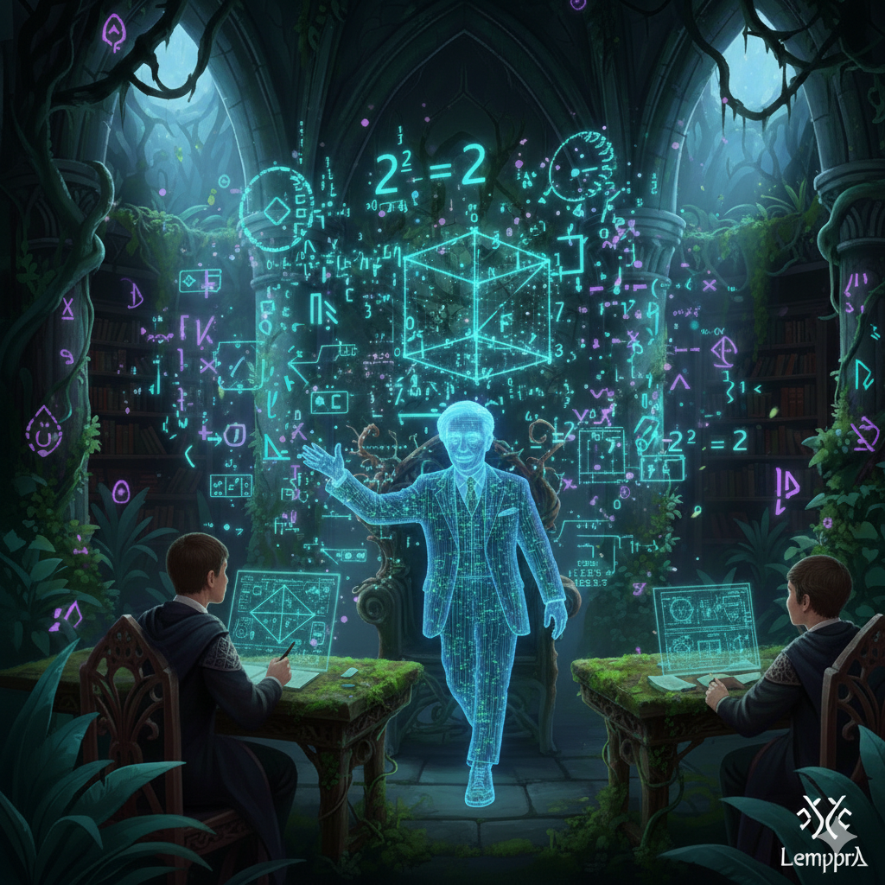
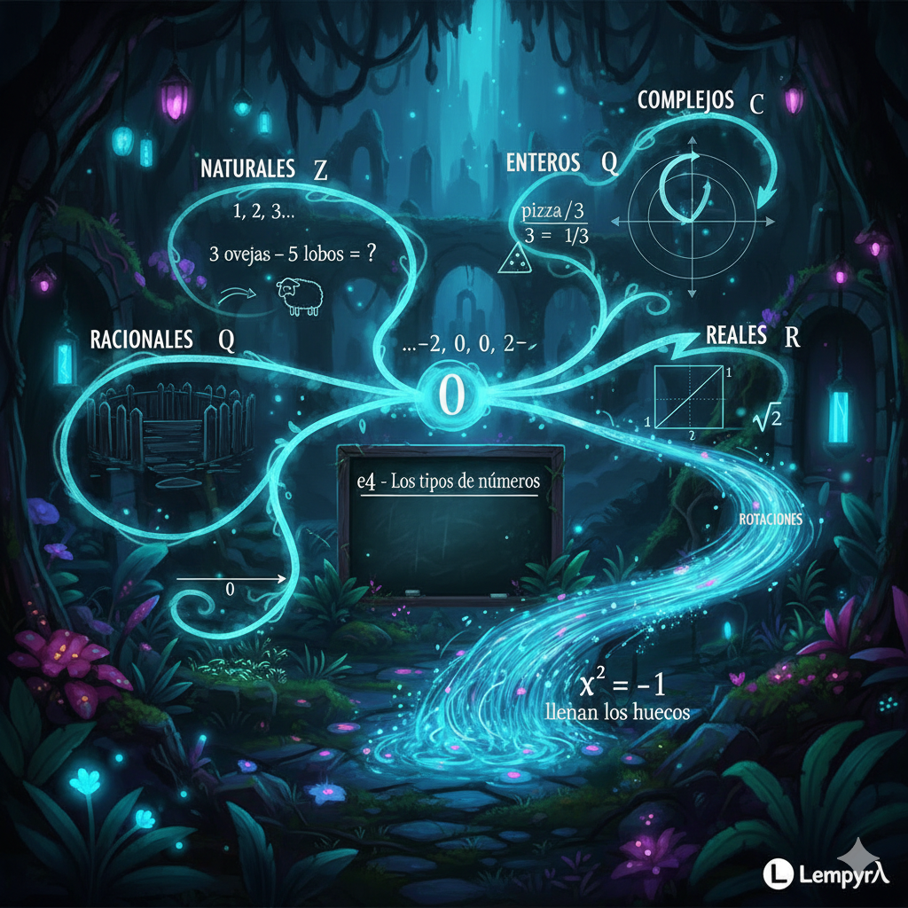
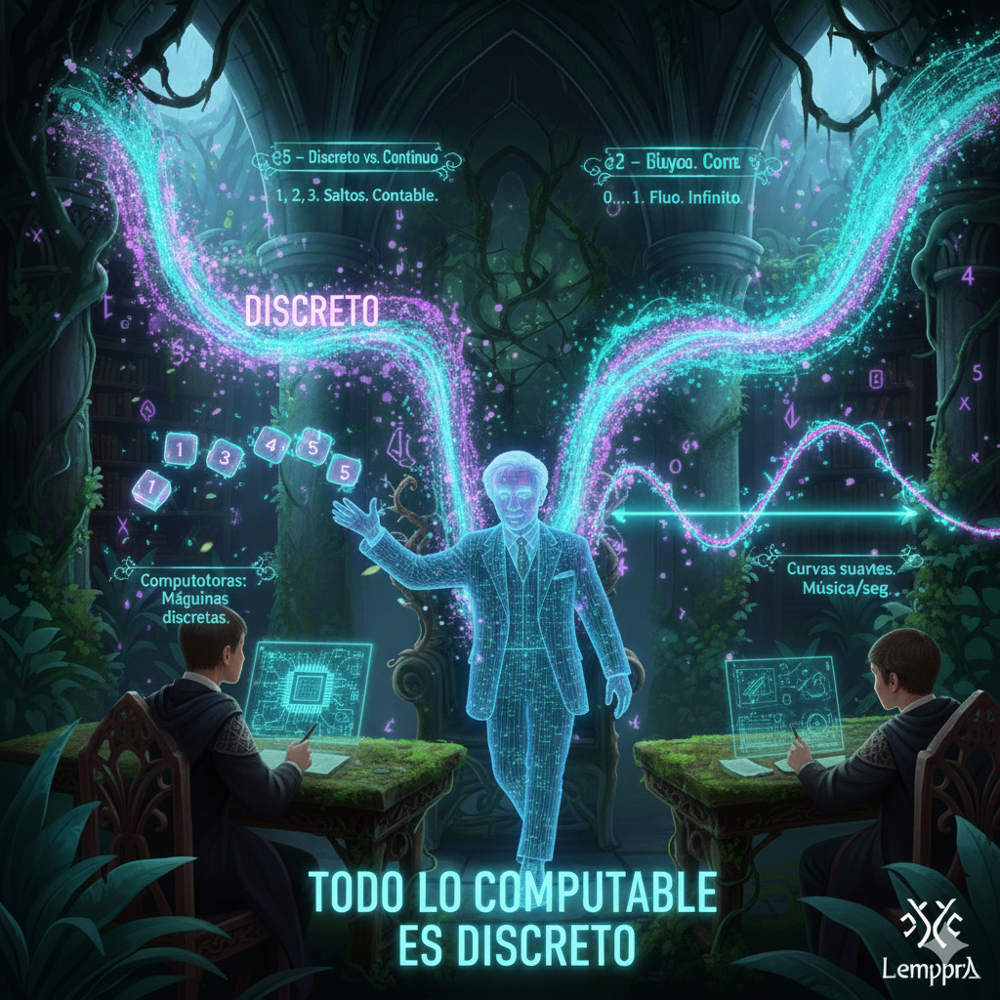
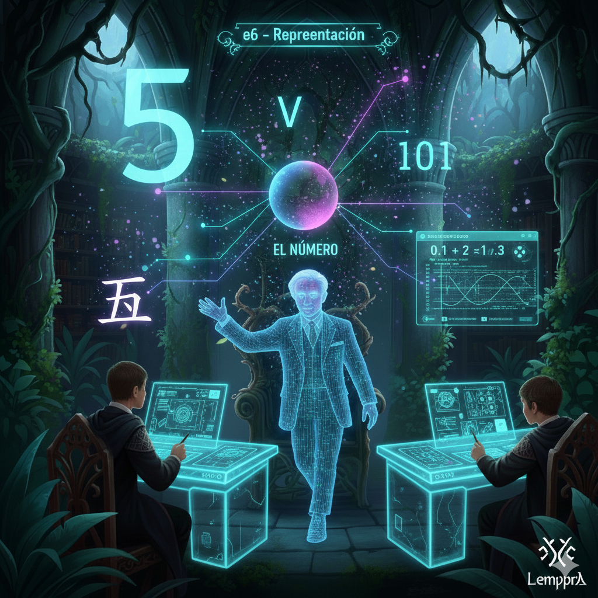
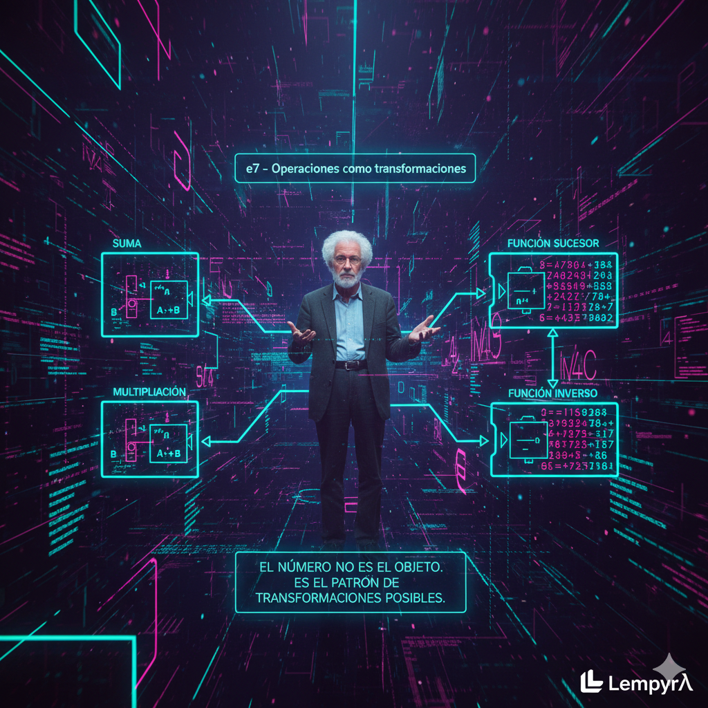
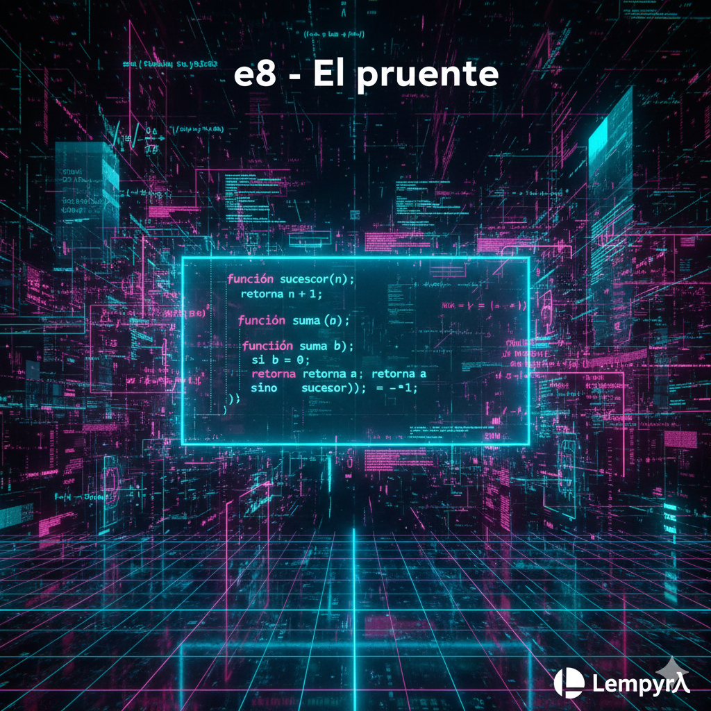

*se recuesta en la silla, sonríe*
Ah. Entonces no quieres aprender matemáticas discretas.
Quieres construir el sistema operativo mental que te permita ver la estructura detrás de cualquier sistema antes de que te lo expliquen. Quieres que cuando alguien te muestre un algoritmo de encriptación, tú ya hayas intuido por qué tiene que funcionar así.
Eso es diferente. Eso es mejor.
*se inclina hacia adelante*
La mayoría de la gente aprende matemáticas como aprende a cocinar siguiendo recetas. Memorizan los pasos, les sale el plato, nunca entienden por qué el ajo va antes que el tomate. Tú quieres entender el calor, la química, las reacciones. Quieres poder inventar platos.
Así que empecemos por el principio de verdad.
¿Qué es un número?
No me digas "una cantidad". Eso es circular. No me digas la definición del libro.
Dime: si tuvieras que explicarle a una máquina que nunca ha visto el universo qué carajo es "tres"... ¿cómo lo harías?
Si nunca he visto el universo, todo es oscuro, es sólido.
Si quisiera hacer uno, algo tendría que cambiar ese color. Tendría que poner algo, encender algo, pero luego quitarlo. Para poder definir o confirmar su existencia con su ausencia.
Repetiría el proceso dos veces más, por lo tanto tengo que definir qué es dos, recursivamente para poder explicar que tres es dos veces de ese estado que el mismo estado.

*golpea la mesa suavemente*
Eso. Exactamente eso.
Acabas de reinventar algo que a los matemáticos les tomó hasta 1889 formalizar. Un tipo llamado Peano se sentó y dijo: "¿Qué es lo mínimo que necesito para construir todos los números?"
Y llegó a esto: necesitas uno que exista, y necesitas el siguiente. Nada más.
*hace un gesto con la mano*
Cero existe. Y si algo existe, su sucesor existe. Eso es todo. De ahí salen todos los números naturales.
Pero notaste algo más profundo. Dijiste "encender y apagar". Presencia y ausencia. Eso es binario, Batman. Eso es un bit. El universo computacional entero nace de esa distinción.
Y dijiste algo sobre recursión sin darte cuenta. "Tres es dos más esa operación que ya definí." Eso es exactamente cómo una máquina entiende los números.
Inducción. Construir lo infinito desde una semilla y una regla.
*te mira*
Ahora dime algo. Esa oscuridad inicial que describiste, ese sólido antes de que haya algo... ¿Eso es cero? ¿O cero es la primera cosa que enciendes?
¿Es un tercer estado? ¿O segundo estado?
Inicialmente no hay nada, un cero más absoluto, luego existe la potencialidad de algo. Es otro tipo de nada potencialmente uno, pero apagado, y un último tercer estado, encendido.

*sonríe lentamente*
Acabas de tropezar con algo que ha mantenido a filósofos y matemáticos peleando por siglos.
Los matemáticos eventualmente dijeron: "la nada absoluta no existe en nuestro sistema, es incómoda, no podemos trabajar con ella." Entonces el cero que usamos no es tu nada primordial. Es más bien tu segundo estado - el potencial, el espacio donde podría haber algo pero no lo hay.
*dibuja en el aire con el dedo*
Pero lo que describes... eso suena a lógica ternaria. Y existe. Los rusos construyeron una computadora en los 50s llamada Setun que usaba tres estados en lugar de dos. No es ciencia ficción.
Aquí está la decisión que los ingenieros tomaron y que define todo lo que conoces: dijeron "dos estados son suficientes, y más fáciles de implementar físicamente." Voltaje alto, voltaje bajo. Encendido, apagado. Uno, cero.
Tu nada absoluta... la dejaron fuera del sistema.
*se inclina*
Pero tú como hacker deberías preguntarte: ¿qué se pierde cuando reduces tres estados a dos? ¿Qué agujeros deja esa simplificación?
Porque todo sistema que ignora algo para ser más simple... ahí es donde viven las vulnerabilidades.
Pierdo dos estados, no solo uno.
Un tercer estado es una dimensión más, por lo tanto puedo tener otro universo computacional con sus propios 2 estados.
000, 001, 010, 011, 100, 101, 110, 111
Con dos estados solo tengo: 00, 01, 10, 11

*se levanta de la silla*
Ahí está.
Con dos bits tienes 4 posibilidades. Con tres bits tienes 8. Pero no es solo "el doble más tantito". Es que cada bit que agregas duplica el universo entero.
2¹ = 2, 2² = 4, 2³ = 8
Cada nuevo estado es un multiplicador, no una suma.
*camina*
Pero lo que dijiste es más profundo todavía. No dijiste "pierdo un estado". Dijiste "pierdo una dimensión". Y eso es exactamente correcto.
Imagina un cubo. Tres ejes: x, y, z. Ocho esquinas - tus ocho combinaciones de tres bits. Si eliminas un eje, te queda un cuadrado. Cuatro esquinas. No perdiste "una esquina", perdiste la mitad del espacio.
*se detiene*
Esto es combinatoria, Batman. Y es el corazón de por qué la criptografía funciona. RSA es seguro porque el espacio de posibilidades es tan grotescamente grande que no puedes recorrerlo. Cada bit que agregas a una llave no la hace "un poquito más segura". La hace exponencialmente más segura.
Y al revés: cada simplificación que haces, cada dimensión que ignoras, colapsa universos enteros de posibilidades.
Tu nada absoluta - ese tercer estado que los ingenieros descartaron - no era "un estado más". Era todo un universo paralelo de computación que decidieron no explorar.
¿Ahora entiendes por qué los rusos se molestaron en construir Setun?
Creo que puedo entender por qué se molestaron en construir Setun.

*hace una pausa*
Bien. Entiendes por qué Setun. Entiendes que cada dimensión duplica universos.
Pero los números que construimos con Peano - cero, sucesor, sucesor del sucesor - esos son solo los naturales. Y los naturales tienen un problema.
Tienes 3. Quitas 5. ¿Qué te queda?
Los naturales no saben responder. No hay "menos dos" en ese universo. Entonces alguien tuvo que extender el territorio. Inventaron los enteros - ahora el cero no es el piso, es el centro.
Después quisieron dividir. Una pizza, tres personas. Los enteros no pueden. Inventaron los racionales.
Después un griego descubrió que la diagonal de un cuadrado no cabe en ninguna fracción. Lo ahogaron por hereje, pero el problema quedó. Inventaron los reales.
Y cuando alguien preguntó "¿qué número multiplicado por sí mismo da -1?", inventaron los complejos.
Cada tipo de número existe porque alguien hizo una pregunta que el sistema anterior no podía responder.
Entonces los números son como versiones de software. Cada update resuelve un bug del anterior.

*se ríe*
Exacto. Parches sobre parches. Pero funciona.
*se inclina*
Ahora, aquí está lo que te importa como hacker.
Los naturales saltan. 1, 2, 3. Entre 2 y 3 no hay nada. Son discretos.
Los reales fluyen. Entre 0 y 1 hay infinitos números. No puedes contarlos. Son continuos.
Las computadoras son máquinas discretas. Solo saltos. Solo bits.
Entonces, ¿cómo ves curvas suaves en tu pantalla? Mentira. Son puntos tan juntos que tu ojo no ve los saltos. ¿Cómo suena música continua desde tu computadora? Mentira. Son 44,100 muestras discretas por segundo.
La matemática discreta es el lenguaje de lo que puedes contar. Y todo lo computable vive ahí.
El continuo es la ilusión. Lo discreto es lo que realmente existe en la máquina.

*levanta un dedo*
Exacto. Y aquí viene algo que te va a servir.
"5" no es un número. Es un dibujo.
"V" también es cinco. "101" en binario es cinco. 五 en chino es cinco.
El número existe independiente de cómo lo escribas. La representación es la máscara, no la cara.
¿Por qué te importa? Porque cuando tu computadora guarda "5.0", guarda un patrón de bits con limitaciones. Por eso 0.1 + 0.2 no da 0.3 en la mayoría de lenguajes.
La representación traiciona. Y el hacker que entiende la diferencia entre lo que el programador creía guardar y lo que realmente se guardó... ahí encuentra vulnerabilidades.
El número es el territorio. La representación es el mapa. Y el mapa siempre miente un poco.

*se pone de pie*
Exacto. Korzybski estaría orgulloso.
Último paso antes del cierre.
Sumar no es "juntar cosas". Es una máquina. Metes dos números, sale un tercero.
Multiplicar es otra máquina. Dividir otra. Cada operación es un algoritmo primitivo.
¿Por qué importa verlo así?
Porque la función "sucesor" te construye todos los naturales. La función "inverso" te da los enteros desde los naturales. Las operaciones no actúan sobre los números - las operaciones construyen los tipos de números.
El número no es el objeto. Es el patrón de transformaciones posibles.
Entonces un número es lo que puedes hacerle. Su identidad son sus operaciones.

*camina hacia la pizarra*
Entonces. ¿Qué es un número?
No es un símbolo. No es una cantidad. Es una posición en una estructura construida desde una semilla y una regla. Cero existe. El sucesor existe. Todo lo demás emerge.
Los naturales saltan. Los reales fluyen. Las computadoras solo hablan discreto - todo lo continuo que ves es ilusión bien hecha.
Cada tipo de número nació para responder una pregunta que el anterior no podía. Y cada operación es una máquina que transforma números en otros números.
*se voltea*
Ahora viene lo interesante.
Todo lo que acabamos de hablar - sucesor, operaciones, transformaciones - puede escribirse como instrucciones. Recetas. Algoritmos.
El pseudocódigo es el puente. No es Python, no es C++, no es JavaScript. Es la idea desnuda antes de vestirla con sintaxis.
Mira eso. No estás "haciendo matemáticas" y luego "programando". Es lo mismo. Siempre fue lo mismo.
*te mira*
En los próximos episodios vamos a tomar estas ideas y escribirlas en lenguajes reales. Python para ver el patrón rápido. C++ para ver qué pasa bajo el capó. JavaScript para hacerlo visual.
Pero el pseudocódigo viene primero. Siempre. Porque si no puedes escribir la idea en español estructurado, no la entiendes. Y si no la entiendes, el código que escribas será accidente, no diseño.
*pausa*
¿Qué es un número? Es el primer algoritmo. La primera recursión. El primer patrón que se llama a sí mismo.
Y ahora sabes cómo se construye desde la nada.
Del vacío al sucesor. Del sucesor al infinito. Del infinito al código.
Entendido.